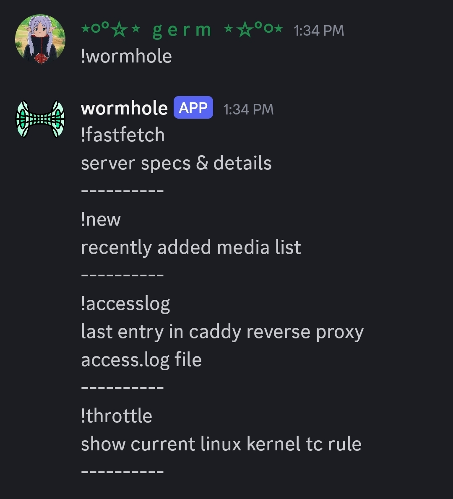
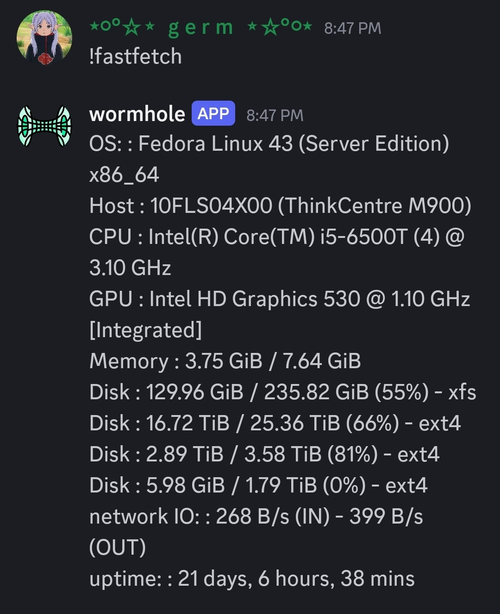
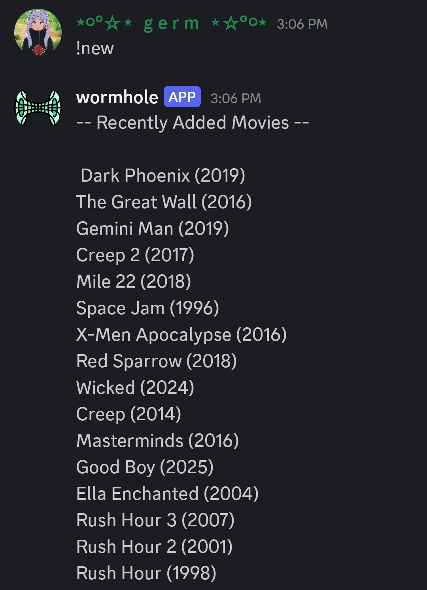
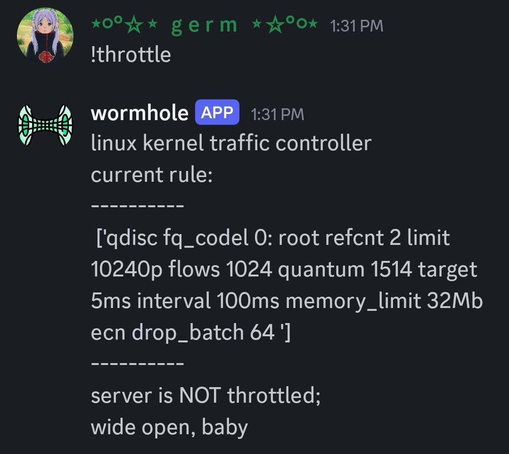
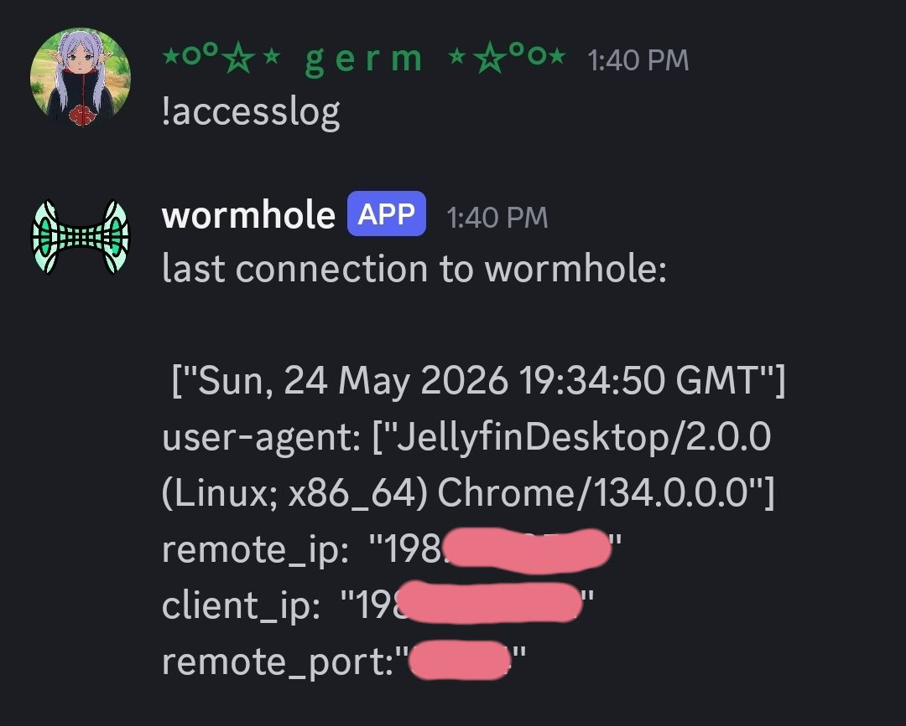

discord-bot
May 24, 2026

This is a discord bot I made with python for interacting with my server.
Mostly just to play around and see how it is done. I found out how to run shell commands from python and then pipe the stdout back into the script to pass it along to my bot to respond in the discord channels with.
See below the response of fastfetch

It is kinda useful for seeing my disk usage. But mostly its just for fun, as I typically just ssh in using termux on my phone to run shell commands directly
This command sends
"ls /path/to/movies -Art | tail -n 16 "
to the shell, which lists the most recent 16 created files (16 recently added movies). Which could be nice if someone wanted to see without logging into wormhole...for whatever reason lol.

This command displays the current rule for the linux kernel packet schedueler. If there is a rule it will tell you the server speed is throttled.
since moving the server to my aunts fiber optic I havent had to throttle it yet. I used to have to every once and a while when it was in my living room because sometimes if everyone decided to stream at once I would experience some minor lag while trying to game. So far no issues now though with the better connection.

And finally this one just takes the most recent entry in my caddy reverse proxy access.log file and formats it up nice and responds it to the discord server. Another useless but cool one.
Basically just shows the last person to access the server.

--END OF TRANSMISSION--